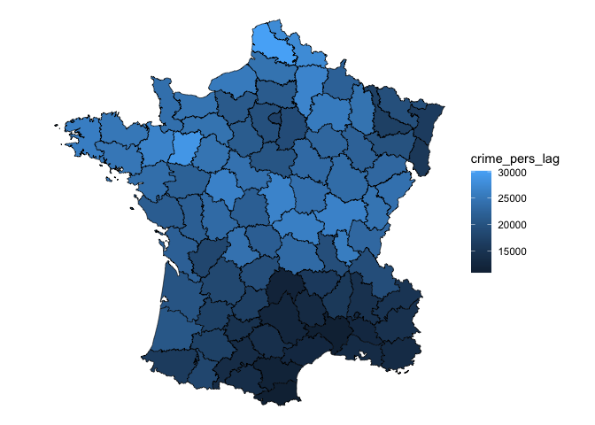
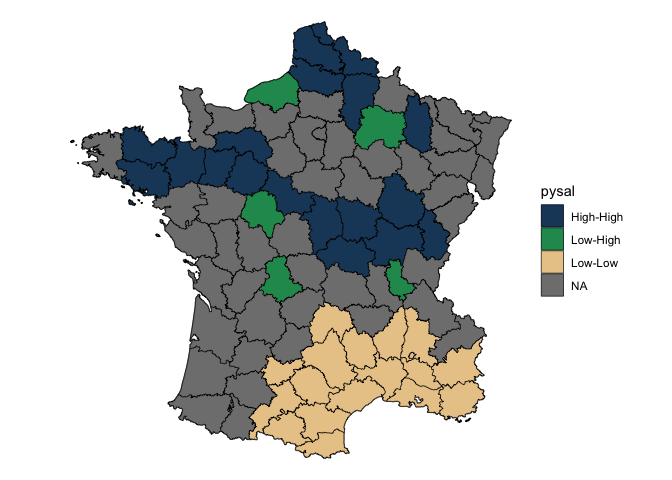

sfdep builds on the great shoulders of spdep package for spatial dependence. sfdep creates an sf and tidyverse friendly interface to the package as well as introduces new functionality that is not present in spdep. sfdep utilizes list columns extensively to make this interface possible.
Installation
Install the released version from CRAN
install.packages("sfdep")You can install the development version of sfdep like so:
remotes::install_github("josiahparry/sfdep")Usage
There are three main categories of functionality relating to geometry neighbors, weights, and local indicators of spatial association (LISAs).
Neighbors
The most fundamental usage is to find contiguous neighbors from a polygon. This is done with st_contiguity() which, by default creates queen weights. If rook weights are desired, set queen = FALSE. Additional arguments can be passed to the underlying spdep::poly2nb() via .... st_contiguity() creates an object of class nb as used by spdep.
library(sf)
library(sfdep)
library(dplyr)
# grab geometry
geo <- st_geometry(guerry)
nb <- st_contiguity(geo)
nb
#> Neighbour list object:
#> Number of regions: 85
#> Number of nonzero links: 420
#> Percentage nonzero weights: 5.813149
#> Average number of links: 4.941176We can identify higher order neighbors with st_nb_lag() and the cumulative higher order neighbors with st_nb_lag_cumul().
st_nb_lag(nb, 2)
#> Neighbour list object:
#> Number of regions: 85
#> Number of nonzero links: 756
#> Percentage nonzero weights: 10.46367
#> Average number of links: 8.894118
st_nb_lag_cumul(nb, 2)
#> Neighbour list object:
#> Number of regions: 85
#> Number of nonzero links: 1176
#> Percentage nonzero weights: 16.27682
#> Average number of links: 13.83529Other point geometry neighbor functions are st_knn(), st_dist_band(), st_nb_dists().
Weights
Polygon weights are created with st_weights() (which calls spdep::nb2listw). By default they are row standardized weights.
wt <- st_weights(nb)
wt[1:2]
#> [[1]]
#> [1] 0.25 0.25 0.25 0.25
#>
#> [[2]]
#> [1] 0.1666667 0.1666667 0.1666667 0.1666667 0.1666667 0.1666667Other point based weights can be created with st_nb_dists(), st_kernel_weights() and st_inverse_weights().
Local Indicators of Spatial Association (LISAs)
LISAs are created from a combination of neighbors and weights and are intended to be used inside of a dplyr pipeline. The below is a worked example of calculating the spatial lag and the local moran.
g <- guerry %>%
mutate(
nb = st_contiguity(geometry),
wt = st_weights(nb)
)Then calculate the spatial lag with st_lag(). Given that we’ve only modified an sf object, we can visualize this with ggplot2.
library(ggplot2)
# create spatial lag
g %>%
mutate(crime_pers_lag = st_lag(crime_pers, nb, wt)) %>%
ggplot(aes(fill = crime_pers_lag)) +
geom_sf(lwd = 0.2, color = "black") +
theme_void()
Most users will be interested in local indicators of spatial association (LISA). Utilize local_moran() to do this. local_moran() will create a data frame column which contains a number of informative variables. For example the cluster that a polygon falls into based on mean, median, or pysal calculations. This will need to be unnested or certain variables hoisted.
Create the Local Moran data frame column.
lisa <- g %>%
mutate(moran = local_moran(crime_pers, nb, wt))
pull(lisa, moran) %>%
glimpse()
#> Rows: 85
#> Columns: 12
#> $ ii <dbl> 0.52226452, 0.82801651, 0.80353997, 0.74188966, 0.2311871…
#> $ eii <dbl> -0.0436664933, 0.0169987175, -0.0106696690, -0.0015410148…
#> $ var_ii <dbl> 0.3648295427, 0.1244317578, 0.1409560743, 0.2311181704, 0…
#> $ z_ii <dbl> 0.9369545, 2.2991365, 2.1686743, 1.5464057, 1.1463544, 1.…
#> $ p_ii <dbl> 0.348781971, 0.021497187, 0.030107416, 0.122006629, 0.251…
#> $ p_ii_sim <dbl> 0.376, 0.016, 0.036, 0.092, 0.284, 0.124, 0.560, 0.108, 0…
#> $ p_folded_sim <dbl> 0.188, 0.008, 0.018, 0.046, 0.142, 0.062, 0.280, 0.054, 0…
#> $ skewness <dbl> 0.186247324, -0.166050386, -0.065842084, -0.148874532, 0.…
#> $ kurtosis <dbl> -0.256988635, -0.083615702, -0.115769407, -0.105166850, 0…
#> $ mean <fct> High-High, High-High, High-High, Low-Low, Low-Low, Low-Lo…
#> $ median <fct> High-High, High-High, High-High, Low-Low, Low-Low, Low-Lo…
#> $ pysal <fct> High-High, High-High, High-High, Low-Low, Low-Low, Low-Lo…Visualize this by converting insignificant values to NA. This uses a cutoff of 0.1.
lisa %>%
tidyr::unnest(moran) %>%
mutate(pysal = ifelse(p_folded_sim <= 0.1, as.character(pysal), NA)) |>
ggplot(aes(fill = pysal)) +
geom_sf() +
geom_sf(lwd = 0.2, color = "black") +
theme_void() +
scale_fill_manual(values = c("#1C4769", "#24975E", "#EACA97", "#B20016"))